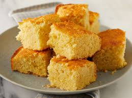

Notes:
soooo good. very fluffy. really good warm!
Corn - Spoon Bread:
ingredients
2 eggs
1 stick of butter
8 ozs of sour cream
2 tablespoonful of sugar
1 8.5 oz box of jiffy corn muffin mix or martha white corn muffin mix
instructions
beat eggs lightly
melt butter
mix all ingredients together lightly by hand apart from the corn muffin mix
lightly mix in box of corn muffin mix
bake in a greased deep dish or cupcake pan for about 1 hour in a 300-350 degree oven unitl the tooth pick comes out clean
appendix